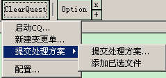

CC助手（ClearCase
Helper）
版
本：2.1.8
更新日期：2009年05月26日
和
我联系
- 介
绍
- Merge
菜单
- Selection
菜单
- ClearQuest
菜单
- 修改日志
介
绍
从第一天使用cc开始就觉得我们每天都需要使用的cc的操作有很多都是重复性的工作，这个CCHelper就是为了减少这些重复性操作提高工作效率而写出
来的。这个CCHelper所提供的功能都是本人在日常使用过程中总结出来的，可以切实提高使用速度和便利的，当然，也不排除这些功能和我个人使用cc的
习惯有关系，但是我觉得我的使用习惯应该和别人差别不大。目前具有的功能是：自动merge功能，包括merge同一个文件夹下的文件和多个文件夹下的文
件；文件路径的选择功能，包括选择文件（文件夹）的cc路径①，文件（文件夹）的硬盘路径，快速在浏览器中打开cc浏览器中正在访问的文件夹，配置常用文
件夹并快速访问，配置CliBuilder的命令包路径并快速访问；ClearQuest功能，包括快速启动CQ，新建变更单，按照一定的模版（可自定义
模版）提交解决方案；集成一些ClearCase常用的工具，例如ClearCase Windows
Region的快速切换，快速打开ClearCase服务配置工具等。
注意，这个工具在第一次运行后，会在如下3个地方生成3个指向该它的快捷方式：快速启动栏、桌面、cc默认的开始菜单文件夹。如果有同名的话，原cc快捷
方式会被替换掉。其实，CCHelper可以帮助启动cc，所以用CCHelper的快捷方式替换cc原来的快捷方式是一个建议。否则，为了使用这个工
具，你必须先启动cc再去运行这个工具，很麻烦。
这个工具的原理：CCHelper正常工作所需的信息，例如当前目录，cc浏览器中选择了哪些文件等，都是通过直接访问cc浏览器的有关控件得到的。所
以，CCHelper实际上就是一个寄生程序，它必须寄生在cc浏览器上才能正常工作。CCHelper正常运行后，你查看windows的任务管理器，
可以查看到CCHelper这个进程。
另外，cc浏览器是可以同时启动多个的，但是CCHelper只能同时有一个在运行，所以CCHelper正常运行后，是不允许有多个cc浏览器同时运行
的。当然，你完全可以突破CCHelper的这个限制去运行多个cc浏览器，但是，这样一来，可以会造成CCHelper的运行不正常。所以，这是一个取
舍，这样的限制可能会让一些人觉得用不习惯。目前这个限制正在寻找解决的方法，但是至今无果。
关于卸载CC助手。它本身是一个绿色程序，无需卸载，清除的时候：1、把快速启动栏、桌面、cc默认的开始菜单文件夹这3个地方的快捷方式替换成原cc的
快捷方式；2、把工具有关的文件从硬盘上删除。
现有的功能都是在日常使用中总结出来的，如果你觉得有什么好点子，不妨发邮件给我：和我联系
①cc路径：指的是一个文件或者文件夹在cc上的代码路径，把这个cc路径提供给别人，别人就可以知道对应的是自己硬盘上的那个文件
了。
Merge
功能
这个功能是CCHelper的最元老的功能了，当初最开始写这个工具的目的就是为了达到这个功能了。经过了多次的研究修改后，现在这个功能应该已经很赞
了，只要配置文件正确，在cc上merge一个或者几个文件、文件夹就简单到只要单击一下鼠标就行。快捷，方便，稳定。丢掉Merge
Manager繁琐的设置吧，使用这个功能可以说是一劳永逸。
使用起来十分简单，但是，在使用前，需要对这个功能进行一定的配置，请选择“配置…”菜单项。对应的配置文件是：mergeConf.ini，请在CCHelper路径中
寻找这个文件，至于如何配置，请打开这个ini文件，里头有详细说明。
使用这样的配置文件实际上是很无奈的，原因是我现在还搞不清楚cc是如何保存本地view的信息的，一旦搞清除了这点，就可以让这个配置文件尽可能的简
单，不需要做那么多的配置。有人熟悉这点的，请不吝赐教。
本
功能的原理：实际上还是离不开Merge Manager，最终使用的还是Merge
Manager。工具根据用户选择的文件或者文件夹，生成Merge Manager能识别的mrgman文件，然后使用Merge
Manager打开。至于mrgman文件的格式，有兴趣的可以另外联系我，这里没必要缀术。
现在在搜索待merge文件之前，可以选择update一下目标文件（文件夹），这样一来，就不怕合入一错误的版本了。
声明一下：这个功能不会对自动merge代码，它仅仅是帮助寻找需要
merge的代码，所以请放心使用。是否要merge是控制在你手中的。
★ Merge按钮
merge
一个文件夹或者多个文件。在cc上选择需要merge的文件夹或者选定多个文件，然后单击这个按钮，可以完成对选定文件/文件夹的merge操作。
★
Merge多个文件夹菜单
这
个功能和Merge按钮类似，只是支持同时选择多个文件/文件夹。选择这个菜单后，会有个对话框出来，请按照对话框上的提示操作。
★
Merge单个文件夹菜单
和Merge
按钮功能一样。
Selection
菜单
这个功能是CCHelper后期增加的功能，主要目的是让cc浏览器和windows的资源管理器无缝结合起来，当然，这是目的了，现在还做不到这么完
美，但是，改进中…
★
复制cc路径
选
择代表cc浏览器中选定的1个或者多个文件、文件夹的cc路径保存在windows的剪切板中。至于和硬盘路径有什么区别，粘贴出来和硬盘路径一对比就知
道了。这个功能的主要应用场景是：你在填写cq的处理方案的时候，总是要填写修改的文件吧，对了，你可以选择多个需要修改的文件、文件夹然后选择这个菜
单，然后到cq中去粘贴到待修改文件的区域中去，是不是很方便。比到硬盘上找到这个目录，然后再一个个复制快多了吧，当然，添加待修改文件，还有更加方便
的方法，在后面有介绍。
★
复制硬盘路径
把cc浏览器中的1个或者多个文件、文件夹的硬盘路径保存
到剪切板中。这个功能的应用场景可就多了，例如你想快速访问某个文件什么的，就可以用这个功能了。相信你能找到的应用场景比我知道的还多，呵呵。
★
在浏览器中打开…
启
动windows的资源管理器打开当前cc浏览器的目录。这个也是很有用的，应用场景也很多，我当初添加这个功能的目的在于：cc浏览器中的右键菜单和
windows浏览器的右键菜单差别很大，经常需要使用windows的右键菜单，所以经常需要在windows浏览器中去打开当前cc浏览器的文件夹。
现在发现，这个功能的应用比我当初想的要广泛的多
★
搜索私有文件 new
CC
有一个地方非常不好，可以说是它的很大的缺点。就是没有提供任何工具来自动识别vob中的受控文件和private文件。这个给研发人员带来了诸多的不
便，有时候甚至会出严重的错误。编码过程中，难免需要新建文件，还有的文件是由IDE自动生成的，而这些文件是必不可少的。在提交代码的过程中就非常容易
漏提交这部分代码。
- 新建的文件特别是IDE自动生成的文件，本身就容易漏掉；
- CC无法在提交的时候寻找到这部分文件；
- 联调或者自测的时候都是使用bugfix上的代码，不会使用集成分支上的代码，这就无法测试到漏提交代码的身上。
于是，等到下一个版本出来了，测试部提单了，才拍大腿发现，怎么就漏了把那个文件提交上去了呢？增加故障泄漏率，增加工作量，恶性循环。不是危言耸听，这
是我的切身体会。于是提供了这个功能，用于在提交代码之前搜索一下敏感目录下的私有文件，减少上述错误发生的概率。
搜索出来的结果呈现的界面上还提供了一些常见的操作，例如保存所选路径的工具，删除功能，检入，取消检入，与前一个版本的对比版本树，版本历史，对象属性
等，另外，双击条目还能调用默认的程序来打开文件，如果是一个文件夹，则会在windows浏览器中打开这个目录。
★ 常用文件夹

每个人总是需要要维护多个模块，这些模块一般在硬盘上总是存在不同的位置，经常需要快速切换到对应的目录中去，如果你不想一级一级目录去找，就使用这个功
能吧。把你需要用的常用目录都配置起来，然后可以快速来访问了。对应的配置文件是：
favourite.ini，
请在CCHelper路径中寻找这个文件，里头有详细说明。
★
CliBuilier助手
这个是给使用CliBuiler的人提供的。
用过CliBuiler的人，肯定对这个工具不满意，特别是打开某个包下的命令，使用十分不方便，这个功能就是为了弥补这个不方便，快速访问已配置的包中
的命令的。对应的配置文件是：
clibuilder.ini，
请在CCHelper路径中寻找这个文件，里头有详细说明。
ClearQuest
菜单

CC和CQ是不分家的。这里把平时使用cq的一些常用的功能都抽取出来，本来这部分功能是存放在CQ上的，后来还是集成到了CCHelper中来，虽然有
些许使用起来不很方便，但是却能提供更多的有用的功能。
★
启动CQ
呵呵，懒人总是有懒人的办法，每天都启动CQ是不是很烦？
那就使用这个功能吧，只要在配置文件中配置好用户名和密码，就可以轻松登录CQ了。
★
新建变更单
这个功能恐怕测试部的兄弟们会喜欢，平时提个单子需要填那
么老多的东西，实际上，很多都是机械的重复。一句话，只要在配置文件中配置好，一切都是自动的。
★
提交处理方案
按照如下的格式对CQ中选定的单子提交处理方案，当然，这
个功能本身不可能帮你把方案内容都自动生成，只是尽可能多的把一些可以收集到的东西帮你生成。包括如下内容：
故障现象：机架图f1帮助异常
受 理 人：陈旭145812
（2008-5-29 16:49:43）
故障定性： <问题>
波及范围：
波 及 人：陈旭145812
波及版本：ZXUN-CSCF(OMM)V4.02.40.I3
解决方案：见原因分析
测试范围：
修改文件：（可用菜单“添加已选的文件”自动完成）
其中，蓝色部分是自动生成的。另外，这一块已经支持可以设置自定义的解决方案了，在配置文件中有个开关，正确设置后，再在配置文件中把自定义的内容配置上
就行了，关于这个地方详细配置，打开
clearquest.ini，
有详细的说明。
★
添加已选的文件
这个功能是配合“
提
交处理方案”来使用的。当你提交了方案
后，想在“修改文件”一栏中增加这个单子需要修改的文件的时候，可以使用它：在cc上选择1个或者多个文件，然后选择这个菜单就可以把这些文件都添加到
“修改文件”中去了。
★
配置
修改日志
- 2007-12-1
新建。仅具备Merge功能，而且该功能不可靠，低效率；
- 2008-1月
添加Selection菜单；
- 2008-4-26
添加CliBuilder菜单；
- 2008-4-29
增强Selection菜单功能，增加快速访问文件夹；
- 2008-4-29
把Merge的配置菜单移入到Merge按钮的下拉菜单中；
- 2008-5-4
修改Merge功能，大大提高Merge的可用性、可靠性和效率。这是一个很具有意义的修改。另，完善Merge功能的帮助；
- 2008-5-4
为Selection菜单和CliBuilder菜单添加分割条；
- 2008-5-8
把Clibuilder合入到Selection菜单中去。
- 2008-5-10
为CQ添加菜单：“添加已选文件”，增强提交处理方案的功能；
- 2008-5-19
添加CCHelper的重启功能；
- 2008-5-23
完善帮助htm文件
- 2008-7-4
添加CQ处理方案的自定义“故障原因分析”、“方案内容”。
- 2008-7-4
修改merge功能的当已经有一个files2merge.mrgman窗口存在的时候无法重新生成mrgman文件的bug。
- 2008-7-4
添加“ClearCase切换工具”、“ClearCase服务”到选项菜单
- 2888-8-2
修改cc助手生成窗口的方式，与cc结合更加紧密，去除不需要的按钮。
- 2008-8-6
进一步完善了帮助文件。更新了部分内容
- 2008-8-13
在Selection菜单中添加功能“搜索私有文件”，实现了单击鼠标就能扫描到当前目录
的私有文件和被check out的文件。
- 2008-8-15
修改了 CQ菜单中“添加已选文件”功能的bug：添加后，在CQ上点了
提交方案后，先前提交的内容不生效。
- 2008-8-20
在Merge操作之前增加了自动update目标文件、文件夹的功能。
- 2008-8-29
给“搜索私有文件”功能进行了加强，现在不仅仅提供搜索结果，还能在搜索的结果上进行一些常见的操作。
- 2009-2-13
增加抢CC工具到选项菜单中。
- 2009-4-13
- 决定不再维护集成到CC上的工具栏模式的CC助手，只维护应用程序版。
- 增加“新建单元测试单”功能。
- 增加单击窗口的叉叉后关闭程序。
- 去掉每次都创建自身快捷方式的功能
- 去掉应用程序版的重启功能
- 加入设置本程序窗口置顶功能
- 完善了“关于”菜单，主要是用于显示版本和更新日期
- 2009-4-14
修改了新建单元测试单的一个bug：故障详细描述用错了故障重现方法的内容。 - 2009-4-22
增加ClearCase菜单中的“审核通过”功能。 - 2009-4-23
增加ClearCase菜单中的“反馈研究结果”功能。主要是增加了一个研究结果的模版。 - 2009-4-29
修改ClearCase菜单中的“反馈研究结果”模版。增加了一些项目的默认值。 - 2009-5-26
修改bug：有的情况下无法自动登陆CQ。